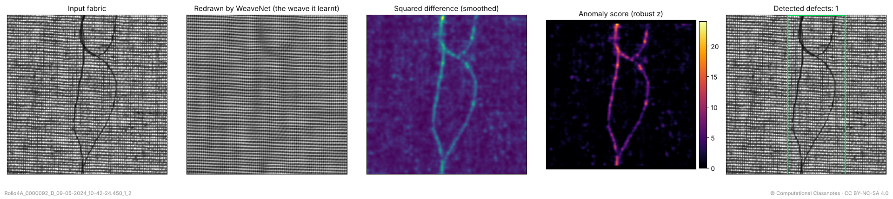
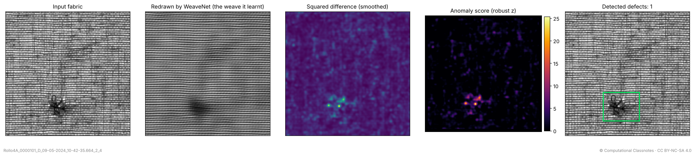
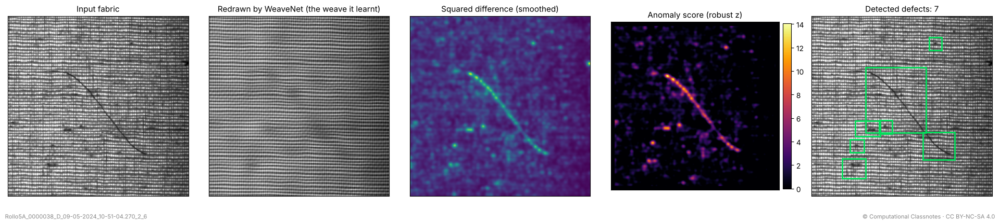
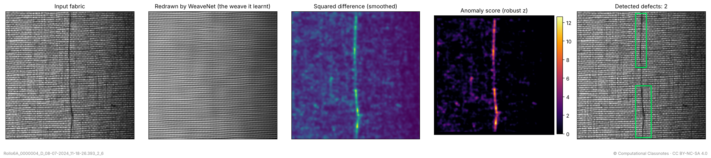
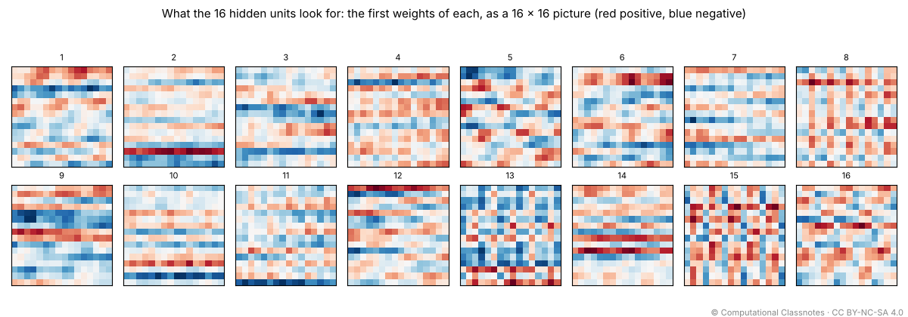

Structure
16 × 16 patches of the image (256 numbers) → 16 hidden units (Tanh) → 256 numbers redrawn (linear), trained on its own patches with half the mean squared error.
Training
The loss (half the mean squared error plus the weight penalty) after each of 14 epochs.
Results
| Training patches | 55815 |
| Set aside as hardest to redraw | 2791 |
| Loss, first and last epoch | 50.3, 27.5 |
| Gradient check (linear output), largest difference | 2.68e-11 |
| Test images with at least one detection | 6 of 6 |
| All images with at least one detection | 21 of 21 |
| Detections per image, test (mean) | 3.17 |
| Mean squared difference, test images | 0.17 |
| Numbers in the net | 8464 |
Loose threads

A knot

A hole

A loose thread across the weave

A vertical line

Loops of loose thread

What the 16 hidden units look for: the weave's own stripes

Aim
The classical fabric trials find defects in three independent ways (a Gabor filter bank, texture codes with nearest neighbours, and removing the weave with an FFT notch filter) and box the areas where they agree. WeaveNet is the learnt counterpart of the third: instead of removing the weave's frequencies by hand, a small net learns the weave and redraws each patch of fabric as clean weave. What it cannot redraw is the defect.
Data
The 21 images of "Fabric Anomaly Dataset 2" (256 × 256, greyscale), gathered from open sources: tiles from three rolls, each with a defect: holes, knots, loose threads, runs. Each image is put on one scale (mean 0, spread 1). Six images are kept apart for testing, one from every few so every roll is in both sets; the other fifteen give 55,815 training patches of 16 × 16 pixels, taken every 4 pixels. No image has been labelled by anyone: the net learns from the fabric alone.
Design
An autoencoder: each patch (256 numbers) is squeezed through 16 hidden units (Tanh) and redrawn (256 numbers, linear), with half the mean squared error as the loss. The squeeze is the point: 16 units are enough for the regular weave but too few for every flaw, so the redrawn image is clean fabric. It is trained with our own code (forward pass, backpropagation, Adam), with a gradient check against finite differences.
Training is robust: after six passes, the 5% of patches it redraws worst (most of them on defects) are set aside, and training goes on with the rest, so it learns the weave rather than the flaws.
To score an image, every patch is redrawn and put back (overlaps averaged); the smoothed squared difference is the error map, which becomes a robust z-score (the image's median and median absolute deviation), as in the classical trials. A defect starts where z ≥ 9 and grows over the pixels around it where z ≥ 4, joining pieces across small gaps (hysteresis, as in edge detection).
Results
Every one of the 6 test images, and all 21 images, has its defect found, with 3.2 boxes per test image on average. The pictures show it best: the second panel is the weave as the net learnt it, with the flaws gone; the error map lights up exactly along the loose threads, around the knot and on the hole.
The 16 hidden units, drawn as 16 × 16 pictures, are mostly horizontal stripes like the rows of the weft, with a few checks like the criss-cross itself: the net has found the weave's structure by itself, the learnt version of the peaks the FFT shows.
Limits
- Every image has a defect, so finding one in each says nothing yet about false alarms. Some extra boxes fall on small irregularities of the weave that may or may not count as defects. Clean images are needed to measure false alarms properly.
- There are no hand-drawn defect outlines, so the boxes are judged by eye. The next step is to compare them with the boxes of the three classical methods, and then let WeaveNet vote with them.
- A dense net sees each patch on its own. A convolutional version would share its filters across the image, and its filters can be set beside the Gabor bank.
Settings of this run
| patch | 16 |
| stride (training) | 4 |
| stride (scoring) | 4 |
| hidden | 16 |
| activation | Tanh |
| output | linear, half mean squared error |
| epochs | 14 |
| robust after epoch | 6 |
| set aside (worst redrawn) | 0.05 |
| batch_size | 256 |
| lr | 0.003 |
| l2 | 1e-05 |
| seed | 7 |
| smoothing of the error map (pixels) | 2.0 |
| z to start a defect | 9.0 |
| z to grow it | 4.0 |
| joining gap (pixels) | 4 |
| smallest defect (pixels) | 60 |
| border left out (pixels) | 6 |
| test images | 6 |
Downloads
Built from lossofgenerality/ccn-net-lab at f45c1d9, training run 2026-11-24-seed7 (ccnlab 0.1.0, Python 3.13.18, NumPy 2.5.3, CPU).